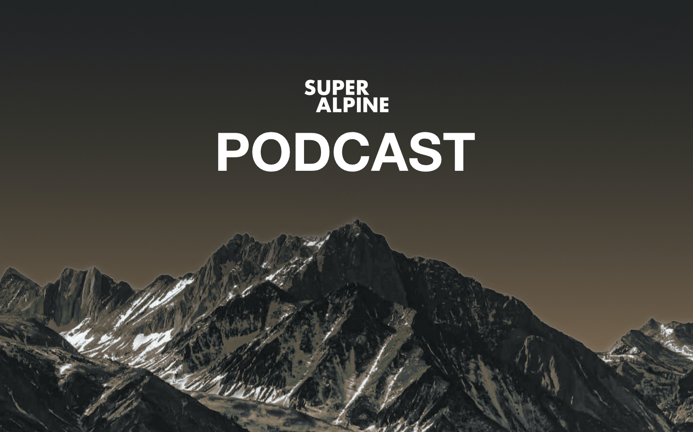
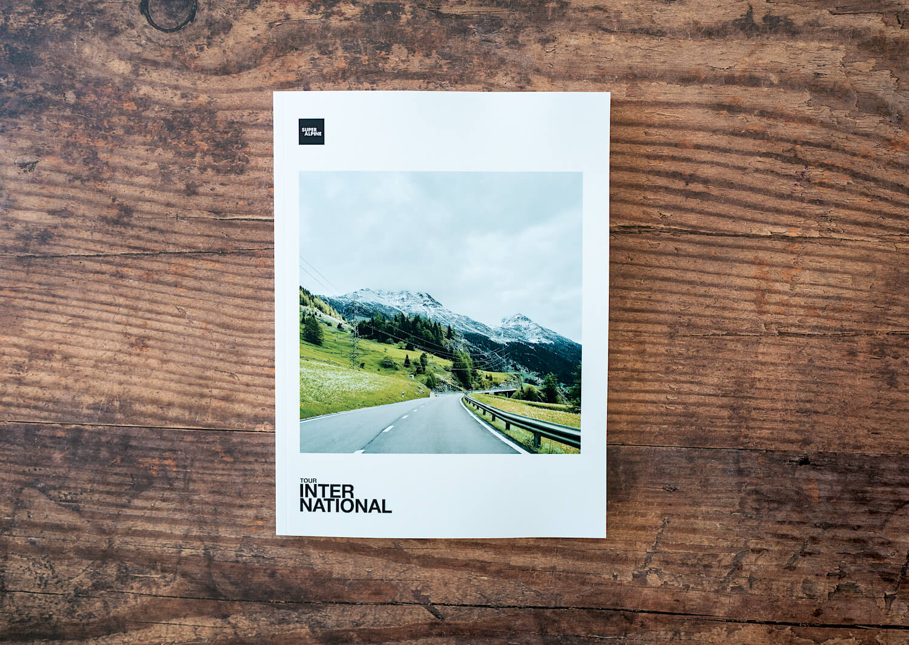
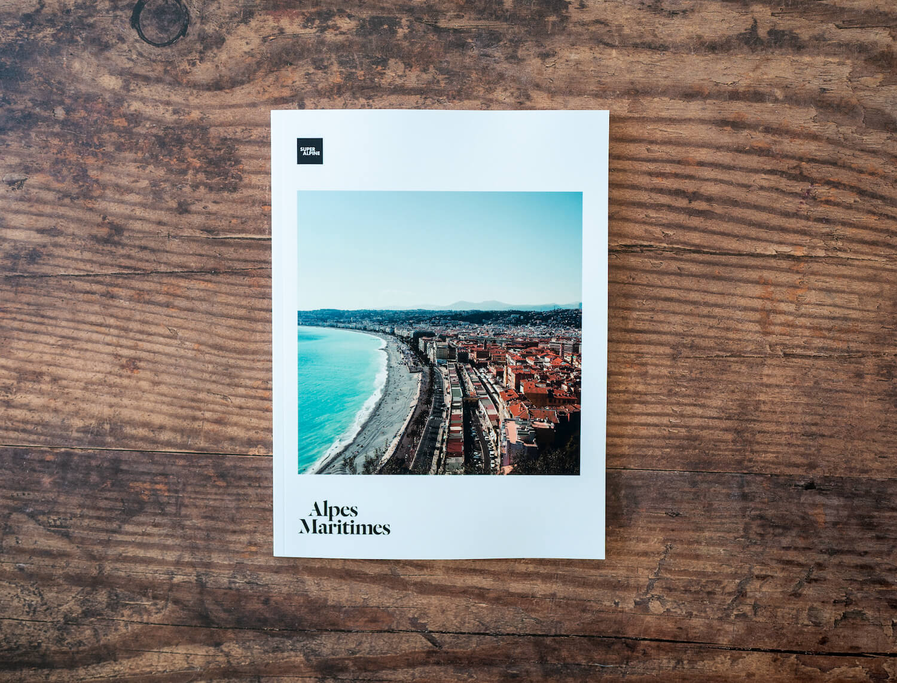
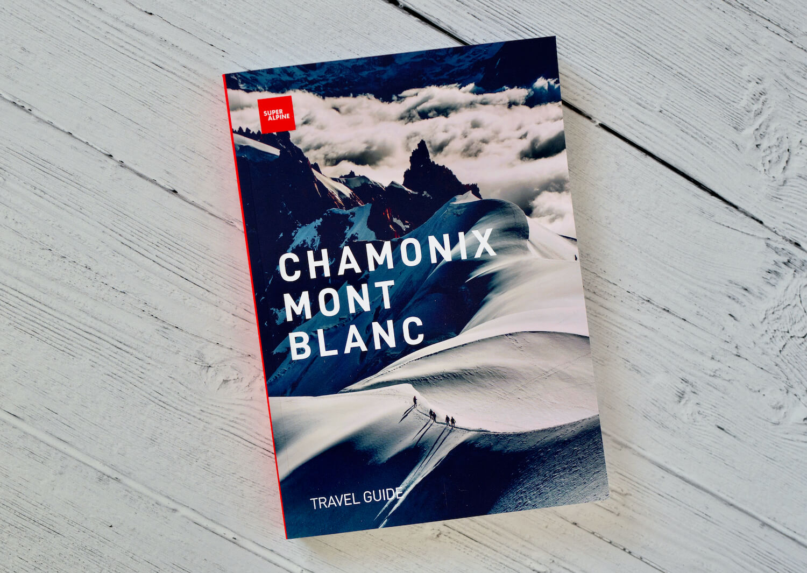
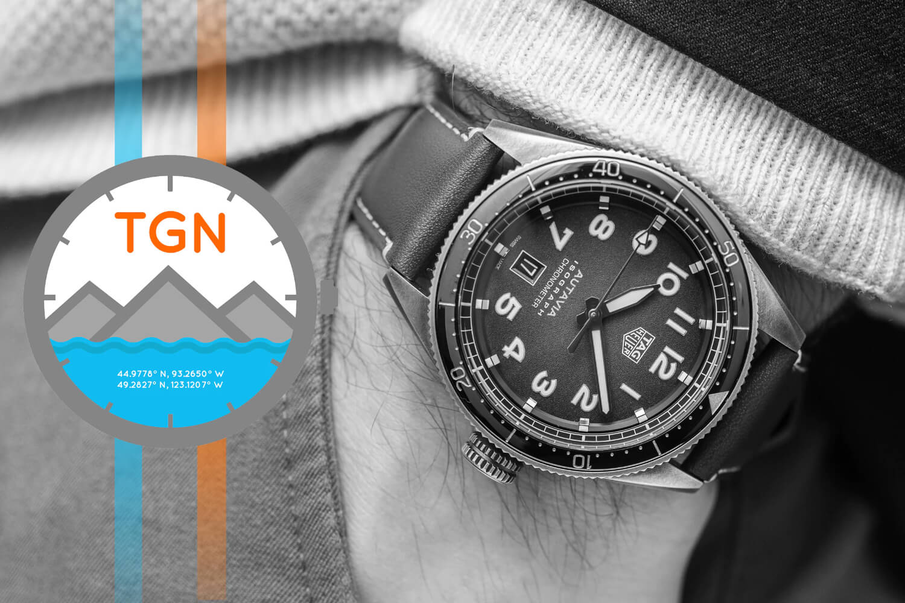
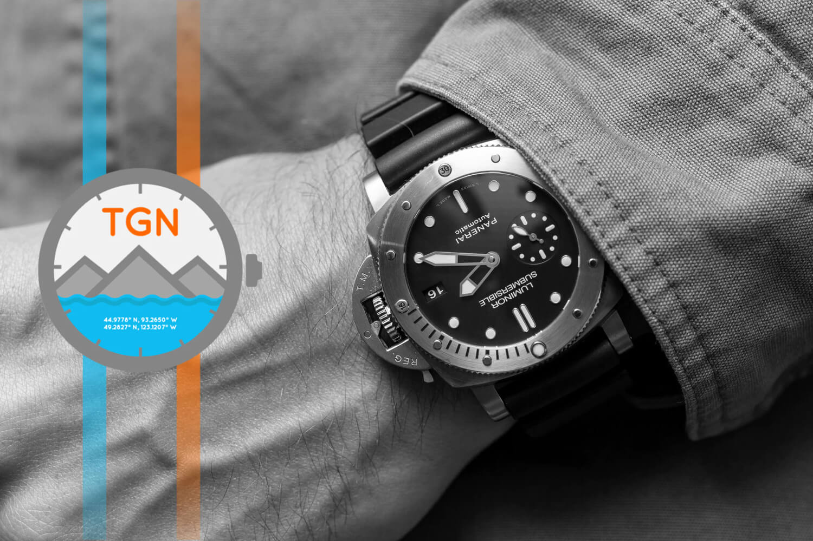
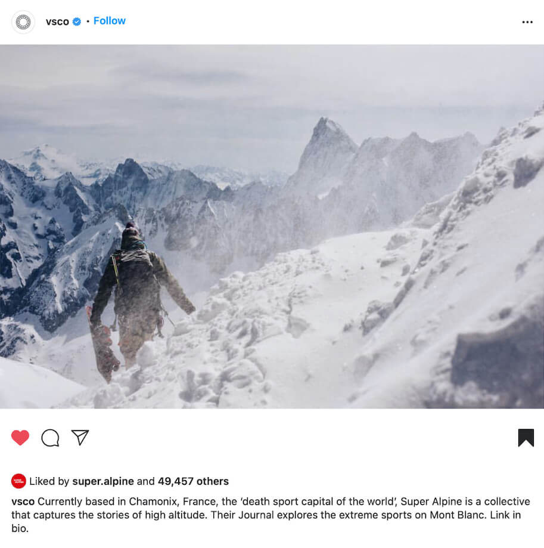

Super Alpine Podcast
November 2021
We have just launched a three episode series of immersive audio podcasts created using binaural recordings. If you listen with headphones on the spatial sound of what was heard and what you are hearing, should be the same. Take a walk in the Alps with us.
Listen now

Super Alpine Magazine Issue Three
November 2021
After a considerably delay... we are pleased to annouce Issue Three, Tour International, is now available to purchase. A frontier busting, pass storming edition marks the return of the magazine.
Shop now

Super Alpine Magazine Issue Two
October 2021
A second edition of the Alpes-Maritimes magazine is now available. The original limited version sold out in 2019 and we have reprinted it with a new cover and updated layout to match future magazines.
Shop now

Back on the road
October 2021
After a two year break thanks to a global pandemic and some bad timing, we finally made it back to the Alps. The new reality of border crossings, getting your passport stamped in and out of Europe and of course, vaccine passports, attestations of health and testing, all made this the most difficult trip we have ever taken.
Travelling to three alpine countries in September and October we have been working on Issue Three of the magazine (again) after abandoning the previous attempt. Look for the new issue this November. Hopefully. We also got to enjoy some spectacular autumn weather and clean alpine air before working on another exciting non-print project - more of that later.

The Chamonix-Mont-Blanc Travel Guide featured on Affinity Spotlight
April 2021
Affinity, makers of the Designer, Photo and Publisher apps, featured the process behind making the Chamonix Travel Guide book.
Read the story

The Chamonix-Mont-Blanc Travel Guide
April 2021
A new guide book from Super Alpine. In the Chamonix-Mont-Blanc travel guide, we share our 20 years of experience of the valley to help travellers make the most informed use of their time.
Shop Now

Super Alpine on TGN again...
March 2019
Issue Two of the Super Alpine magazine, Alpes-Maritimes was featured on The Grey NATO podcast.
Listen to the podcast

Super Alpine on TGN
November 2018
Issue One of the Super Alpine magazine, the Chamonix special launch edition was featured on The Grey NATO podcast.
Listen to the podcast

Super Alpine on VSCO
September 2016
VSCO featured one of our images on their Instagram page gaining 50k likes - unfortunatley they failed to give a link to our Instagram ...
See the post